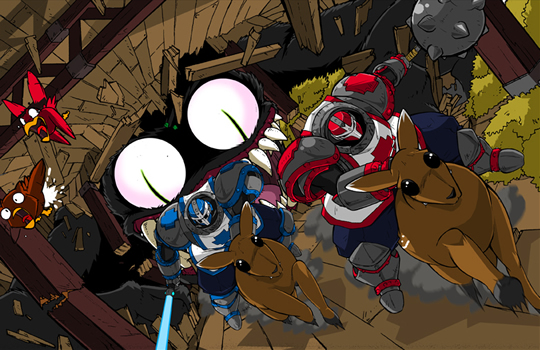

Castle Crashers
Castle Crashers é um jogo para Xbox Live Arcade, PlayStation Network e Steam (PC) desenvolvido independentemente pela The Behemoth. Em desenvolvimento desde 2005 e anunciado pela The Behemoth durante a Comic-Con de 2006, o jogo está disponível para download na Xbox Live Arcade, PlayStation Store e Steam (Windows e Mac). Castle Crashers foi concluído por volta de 16 de maio de 2008 antes de ser lançado em 27 de agosto de 2008 para Xbox Live, em 31 de agosto de 2010 para PSN e em 26 de setembro de 2012 para Steam.

História
A história de Castle Crashers acompanha a jornada de até quatro cavaleiros que partem em uma missão para recuperar um poderoso cristal mágico e salvar quatro princesas sequestradas pelo terrível Mago Maligno e seu exército. Cada princesa acaba nas mãos de diferentes inimigos espalhados pelo reino. A primeira princesa é capturada pelos Bárbaros, enquanto outra fica presa com um excêntrico Industrialista vestido de roxo. Em determinado momento, ele perde a princesa durante uma perseguição, fazendo com que o próprio Mago Maligno precise recuperá-la. A terceira princesa é entregue a um enorme Ciclope, e a última é mantida por um poderoso feiticeiro de gelo em um castelo localizado no distante “Mundo de Neve”.
Durante a aventura, os cavaleiros atravessam diversos cenários e enfrentam vários perigos, contando ocasionalmente com a ajuda do Rei e de seus soldados. Ao longo do caminho, eles são perseguidos por um Cavaleiro Necromante aliado do Mago Maligno, capaz de invocar esqueletos e até reviver antigos inimigos derrotados, como o Ciclope. Depois de derrotarem grande parte do exército inimigo e resgatarem três das princesas, os heróis finalmente chegam ao castelo do Mago Maligno, onde a última princesa está presa. Lá dentro, eles enfrentam desafios ainda maiores, incluindo um estranho Pintor que usa suas próprias pinturas como arma, o Ciclope renascido, o Necromante e, por fim, o próprio Mago Maligno, que assume diferentes formas durante a batalha final. Após vencerem a luta e recuperarem o cristal mágico, os cavaleiros retornam para casa celebrando a vitória ao lado de vários personagens encontrados durante a jornada. Porém, no momento em que tentam beijar a última princesa resgatada, descobrem uma surpresa inesperada: ela era, na verdade, um palhaço disfarçado.
Jogabilidade
Castle Crashers é um jogo no estilo beat'em up de rolagem lateral que também possui alguns elementos de RPG. Após escolher um personagem, o jogador inicia sua jornada pelo mapa do jogo, começando pelo ataque do Mago Maligno ao castelo. Conforme as fases são concluídas, novas áreas ficam disponíveis, além da possibilidade de revisitar fases anteriores a qualquer momento. Durante a aventura, o jogador encontra lojas onde pode comprar poções de cura, armas, bombas, sanduíches e itens especiais utilizando o ouro obtido ao derrotar inimigos. Também existem arenas de combate nas quais é possível enfrentar grandes grupos de inimigos para desbloquear novos personagens jogáveis.
Cada personagem possui ataques corpo a corpo, combinações de golpes e uma habilidade mágica exclusiva. O jogador possui uma barra de vida que diminui ao receber dano dos inimigos; caso ela se esgote, o personagem é derrotado. No modo solo, isso obriga o jogador a reiniciar a fase, enquanto no modo cooperativo os aliados podem reviver o personagem em um curto período de tempo. Além da vida, o jogo também possui uma barra de magia que se recarrega gradualmente. Diversas armas podem ser encontradas ao longo do jogo, cada uma oferecendo bônus diferentes aos atributos do personagem. Outro recurso importante são os Animal Orbs, pequenos animais que acompanham o jogador oferecendo vantagens especiais, como ajuda em batalha, aumento de atributos ou maior quantidade de ouro ao derrotar inimigos. Conforme os inimigos recebem dano, o jogador ganha pontos de experiência, permitindo subir de nível. A cada novo nível, é possível distribuir pontos entre quatro atributos principais para fortalecer o personagem. Alguns níveis também desbloqueiam novos combos de ataque. O progresso de experiência e conclusão do jogo é salvo separadamente para cada personagem jogável. Novos personagens podem ser desbloqueados ao terminar o jogo com determinados cavaleiros, completar arenas ou através de conteúdos adicionais disponibilizados no jogo.
Castle Crashers também possui suporte para até quatro jogadores no modo cooperativo, tanto localmente quanto online. O progresso das fases depende do jogador anfitrião da partida, mas todos os participantes continuam evoluindo seus personagens, coletando ouro, armas e animais especiais juntos durante a campanha.
O jogo ainda conta com modos extras e minigames. Um deles é o modo Arena, onde os jogadores precisam sobreviver a várias ondas de inimigos. Outro minigame clássico é o “All You Can Quaff”, no qual os jogadores competem para comer alimentos o mais rápido possível apertando botões repetidamente. Na versão de PlayStation 3, o minigame “All You Can Quaff” foi substituído por um modo de vôlei em equipes 4 contra 4, com diferentes quadras desbloqueadas durante a campanha. Já na versão Remastered lançada para Xbox One e Steam, o “All You Can Quaff” foi removido e substituído pelo minigame “Back Off Barbarian”, em que os jogadores precisam trabalhar em equipe para escapar dos bárbaros e sobreviver o máximo de tempo possível.